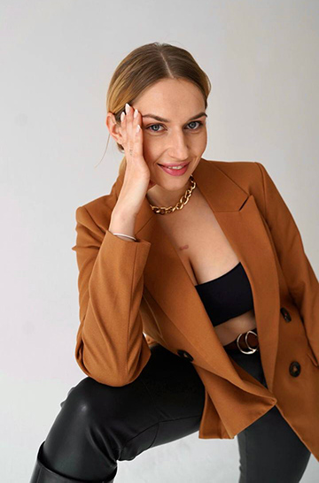

Cамопрезентація
Зміст
-
Розповідь про себе
- Місце народжеення та проживання
- Сім"я
- Короткий опис
- Інтереси та хоббі
- Мої цінності
Розповідь про себе
Мене звуть Олена. Живу я в місті Києві, але народилася на Волині. Після одруження я переїхала до мальовничого та такого мені близького за духом міста.
Тут народився мій син. Це місто з першого дня і по сьогоднішній день боронить мій чоловік.
Я середнього зросту, струнка. У мене довге волосся. Я люблю одягатися зручно: джинси, футболки, кросівки. Ношу і сукні, і спідниці, але досить рідко, тому що мій головний девіз — комфорт.
Інтереси та хоббі
Я – людина, яка легко захоплюється, тому у мене багато різних хобі. У дитинстві я ходила в художню школу, але потім кинула. Хоча я і досі люблю малювати.
Ще я дуже люблю читати серйозні та хороші книги. Мої улюблені
письменники це - Джек Лондон, Ернест Хемінгуей, О’генрі,
Кен Кізі, Джером К.Джером, Артур Конан Дойль. У їхніх творах є все,
що я так люблю: роздуми про життя, гумор, іронія.
Мої цінності
Найбільше на світі я ціную відносини з людьми. Сім’я, друзі — це найцінніше, що є у людини. Близькі люди завжди допоможуть, підтримають у важку хвилину, підбадьорять теплими словами.
Люблю робити компліменти, тому що коли говориш людям добрі слова, то вони розквітають на очах.
Домагатися успіху – це, звичайно, теж важливо, але, по-моєму, куди важливіше бути милосердними, добрими і розуміючими.